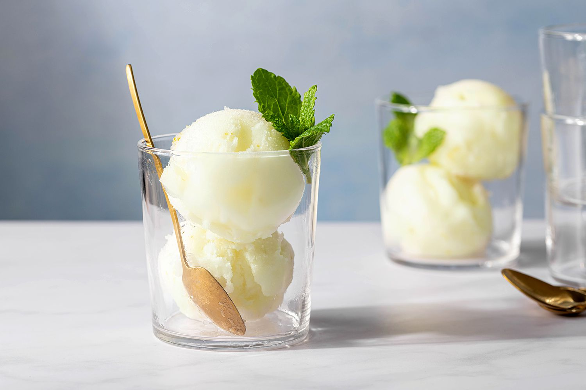

Palate Cleanser Lime Sorbet
A refreshing citrus treat
Ingredients
- 1 cup water
- 1 cup sugar
- 1 cup freshly squeezed lime juice
- 1 teaspoon fresh lime zest
- Fresh mint leaves, for garnish (optional)

Instructions
- In a medium saucepan over medium heat, bring the water, sugar, and lime juice to a simmer. Stir constantly to help the sugar dissolve.
- Once all of the sugar has dissolved, remove the mixture from the heat and cool it to room temperature, about 1 hour.
- Stir the lime zest into the sorbet mixture. Chill the mixture for at least 2 hours.
- Pour the chilled sorbet base into your ice-cream maker and churn it according to the manufacturer's instructions.
- Once churned, transfer it to a freezer-safe container and freeze until it's time to serve.
Go to Entry 5 ✿